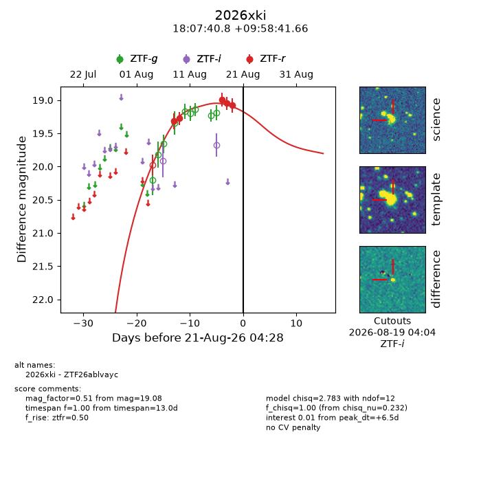
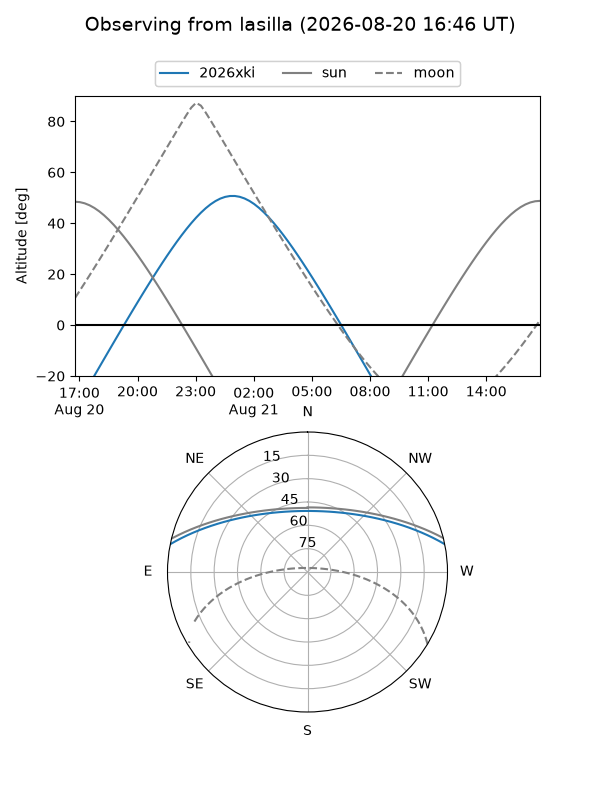
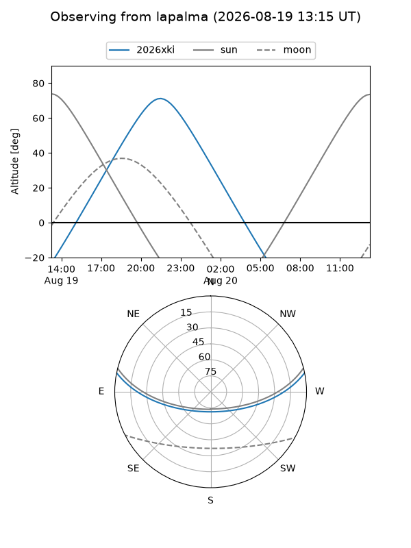
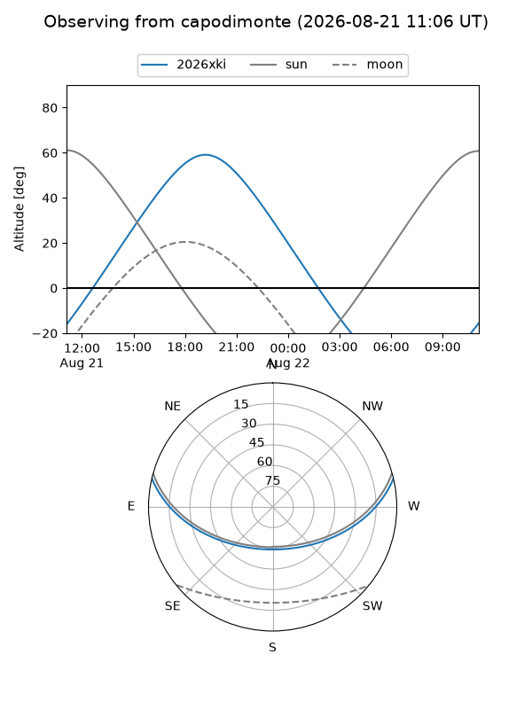
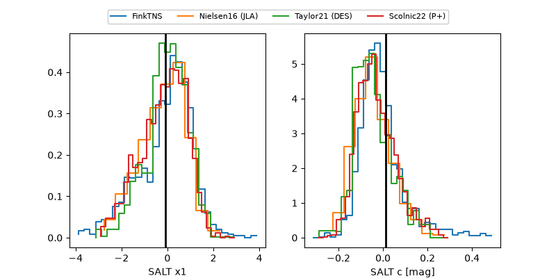

2026xki
Target 2026xki at 2026-08-21 04:31
Aliases and brokers:
FINK-ZTF: ztf.fink-portal.org/ZTF26ablvayc
Lasair-ZTF: lasair-ztf.lsst.ac.uk/objects/ZTF26ablvayc
ALeRCE-ZTF: alerce.online/object/ZTF26ablvayc
YSE-PZ: ziggy.ucolick.org/yse/transient_detail/2026xki
TNS name: wis-tns.org/object/2026xki
Direct TNS query: direct search
alt names
ZTF26ablvayc (ztf,fink_ztf)
2026xki (tns,yse)
Coordinates:
equatorial (ra, dec) = 271.9200,+9.97824
equatorial (HMS+DMS) = 18:07:40.81,+09:58:41.66
galactic (l, b) = (37.0127,+14.20250)
Flags:
TNS type: nan
peak dt: +6.5
Photometry:
last ztfr=19.08
5 ztfr detections
Lightcurve

Visibility



Additional plots
